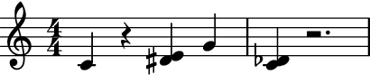

auxjad.respell_container¶
-
auxjad.respell_container(container: abjad.core.Container.Container, *, include_multiples: bool = False, respell_by_pitch_class: bool = False)¶ Mutates an input container (of type
abjad.Containeror child class) in place and has no return value. This function changes the accidentals of individual pitches of all chords in a container in order to avoid augmented unisons.To use this function, apply it to a container that contains chords with augmented unisons.
>>> container = abjad.Container(r"c'4 r4 <ef' e'>4 g'4 <c' cs'>4 r2.") >>> auxjad.respell_container(container) >>> abjad.f(container) { c'4 r4 <ds' e'>4 g'4 <c' df'>4 r2. }
The example below shows the default spelling of 2-note chords by
Abjadin the upper staff, and the respelt 2-note chords in the bottom staff.>>> staff1 = abjad.Staff() >>> staff2 = abjad.Staff() >>> for pitch in range(12): ... staff1.append(abjad.Chord([pitch, pitch + 1], (1, 16))) ... staff2.append(abjad.Chord([pitch, pitch + 1], (1, 16))) >>> auxjad.respell_container(staff2) >>> literal = abjad.LilyPondLiteral(r'\accidentalStyle dodecaphonic') >>> abjad.attach(literal, staff1) >>> abjad.attach(literal, staff2) >>> score = abjad.Score([staff1, staff2]) >>> abjad.f(score) \new Score << \new Staff { \accidentalStyle dodecaphonic <c' cs'>16 <cs' d'>16 <d' ef'>16 <ef' e'>16 <e' f'>16 <f' fs'>16 <fs' g'>16 <g' af'>16 <af' a'>16 <a' bf'>16 <bf' b'>16 <b' c''>16 } \new Staff { \accidentalStyle dodecaphonic <c' df'>16 <cs' d'>16 <d' ef'>16 <ds' e'>16 <e' f'>16 <f' gf'>16 <fs' g'>16 <g' af'>16 <gs' a'>16 <a' bf'>16 <as' b'>16 <b' c''>16 } >>

The function looks for all augmented unissons in chords of 3 or more pitches:
>>> container1 = abjad.Container(r"<a c' cs' f'>1") >>> container2 = abjad.Container(r"<a c' cs' f'>1") >>> auxjad.respell_container(container2) >>> staff = abjad.Staff([container1, container2]) >>> abjad.f(staff) \new Staff { { <a c' cs' f'>1 } { <a c' df' f'>1 } }

It is not a problem if the pitches are input out of order.
>>> container1 = abjad.Container(r"<e' cs' g' ef'>1") >>> container2 = abjad.Container(r"<e' cs' g' ef'>1") >>> auxjad.respell_container(container2) >>> staff = abjad.Staff([container1, container2]) >>> abjad.f(staff) \new Staff { { <cs' ef' e' g'>1 } { <cs' ds' e' g'>1 } }

By default, this function only changes spelling for pitches that are 1 semitone apart.
>>> container1 = abjad.Container(r"<c' cs''>1") >>> container2 = abjad.Container(r"<c' cs''>1") >>> auxjad.respell_container(container2) >>> staff = abjad.Staff([container1, container2]) >>> abjad.f(staff) \new Staff { { <c' cs''>1 } { <c' cs''>1 } }

To consider pitches in different octaves (thus including augmented unisons, augmented octaves, augmented fifteenths, etc.), call this function with the keyword argument
include_multiplesset toTrue.>>> container1 = abjad.Container(r"<c' cs''>1") >>> container2 = abjad.Container(r"<c' cs''>1") >>> auxjad.respell_container(container2, include_multiples=True) >>> staff = abjad.Staff([container1, container2]) >>> abjad.f(staff) \new Staff { { <c' cs''>1 } { <c' df''>1 } }

By default, when this function changes the spelling of a pitch, it does not change the spelling of all other pitches with the same pitch-class.
>>> container1 = abjad.Container(r"<c' cs' cs''>1") >>> container2 = abjad.Container(r"<c' cs' cs''>1") >>> auxjad.respell_container(container2) >>> staff = abjad.Staff([container1, container2]) >>> abjad.f(staff) \new Staff { { <c' cs' cs''>1 } { <c' df' cs''>1 } }

To alter all pitch-classes, call this function with the keyword argument
respell_by_pitch_classset toTrue.>>> container1 = abjad.Container(r"<c' cs' cs''>1") >>> container2 = abjad.Container(r"<c' cs' cs''>1") >>> auxjad.respell_container(container2, respell_by_pitch_class=True) >>> staff = abjad.Staff([container1, container2]) >>> abjad.f(staff) \new Staff { { <c' cs' cs''>1 } { <c' df' df''>1 } }